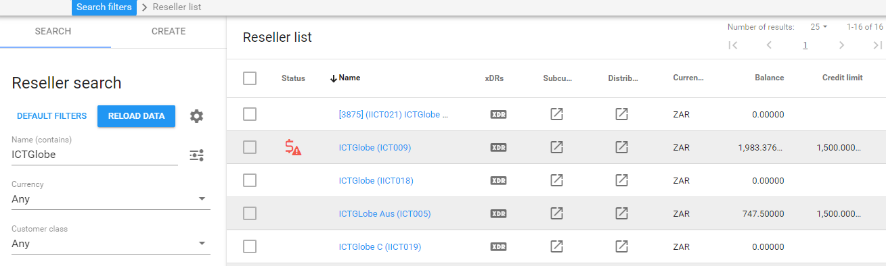
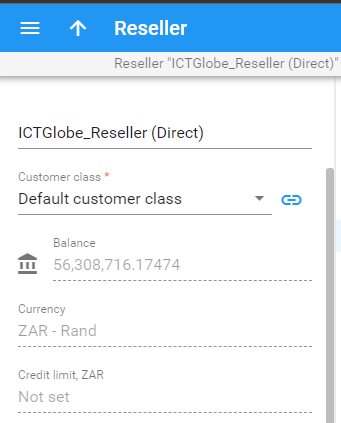
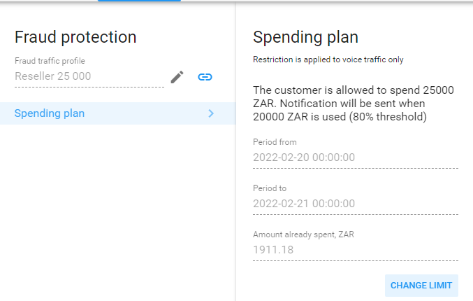
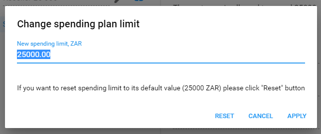
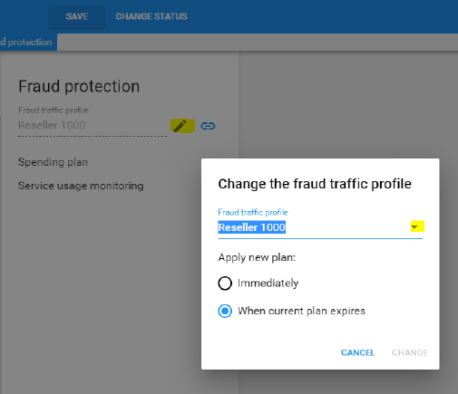
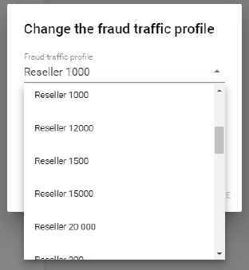

Reseller Balance and Credit Limits
Current Balance and Credit Limit
NOTE: On the reseller page, from the available list, the current balance, credit limit and other information is visible, such as 'credit limit exceeded or reseller blocked'

1. Once navigated to the selected reseller, the current balance and credit limit will also be visible on the right side, under the reseller's name.

It should be noted that most resellers currently does not have a credit limit set, unless it was agreed or requested. This is due to credit limits that is reached, as a result, ALL their subcustomers are also affected.
Regarding reseller balances and credit limits, further training on balance adjustments will not be done. Credit limit increase or decrease, balance adjustments, and reseller status such as the 'Block' function is strictly handled only by the finance department.
As an added 'Fraud Protection' measure, there are daily spending plans set, which starts and resets at the beginning of each new day.
In the case that a resellers daily spending limit was reached, the following actions can be taken in order to re-open the account:
- Reset - This action is recommended in the case that it is a one-time request, and where a daily limit increases is not repeatedly requested.
- Edit - This action is recommended in the case that the daily limit is increased repeatedly, due to an increase of customers, or voice usage.
To Reset the Daily Spending Limit:
On the reseller page, scroll down to the Fraud protection field.

Under the ‘Fraud protection’ tab, select ‘Spending plan’ and then the ‘CHANGE LIMIT’ option:

Once 'CHANGE LIMIT'was selected, the current limit can either be ‘Reset’ to start from anew, or an new limit for the day can be manually typed and updated:

NOTE: This change is applied for the remainder of the current day only.
To Change the Daily Spending Limit:
On the reseller page, scroll down to the Fraud protection field and select the 'pencil' icon in order to edit.
The current profile can be changed here, or if not already assigned, it can be selected from the dropdown list:

NOTE:By default it will be implemented when the current plan expires, alternatively, you have the option to apply the change with ‘Immediate’ effect.
To change the current daily spending plan, select the new reseller daily spending plan from the list.

NOTE: This change is applied to each following day until changed or removed.
NOTE: Both the Credit Limit and Daily Spending Plan should be setup in a way as to cover calls for all customers of the reseller.